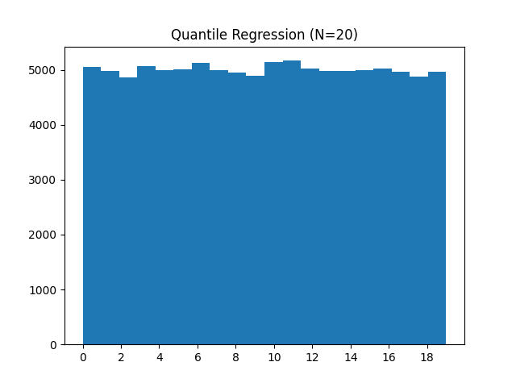
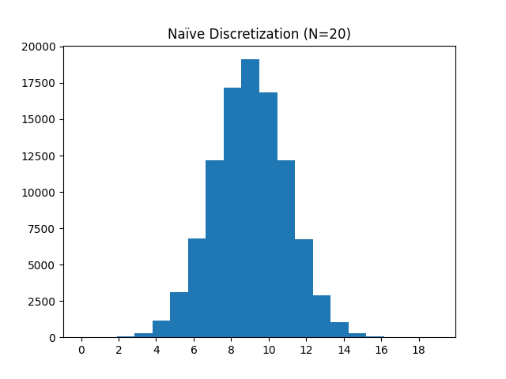

Discretization Implementations
We provide the implementation for our quantile discretizer and visualize how it differs from the naïve discretization scheme.
We can test this on normally distributed data:
The output is uniform over the indices:

Compare this to a naïve discretization scheme, for which the distribution over returned indices matches that of the underlying data distribution:

For the sake of thoroughness, we also provide the implementation for the naïve discretizer here. It has the same interface as that above and
matches that provided in the supplementary material.